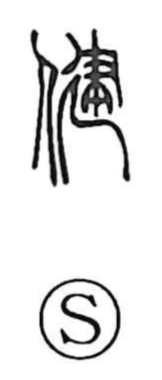

健

Kun: sukoyaka | On: ken
healthy ・ strong
Explanation
健 is a phono-semantic character built from the person element and 建, which supplies the On reading ken and the core idea. In early forms, 建 evoked the divination and surveying of directions and terrain to choose a site within enclosing walls, then measuring and laying a proper foundation for ritual buildings. Carried over to the body, this image of a firmly established, well-protected base yields the sense of a condition not easily disturbed from outside—hence “healthy” and “strong.” A related formation, 腱, names the powerful tendon that binds muscle to bone.